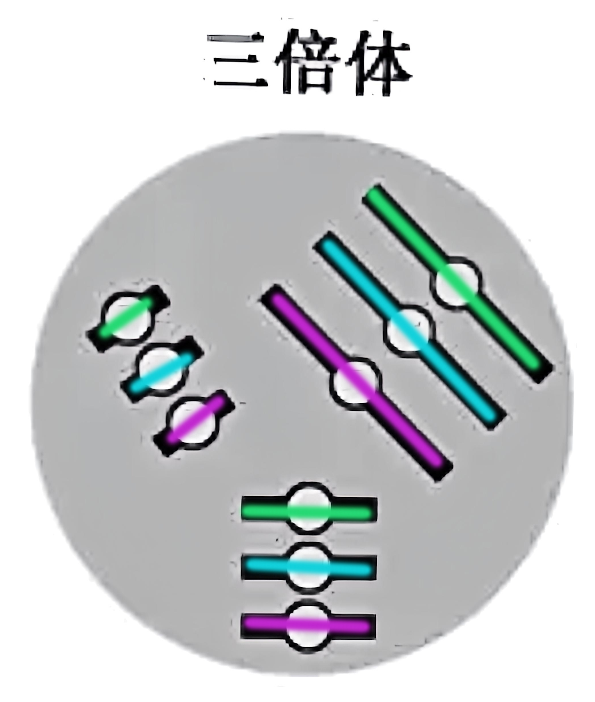

有丝分裂知识详解
🎯 核心概念理解
🧬 同源染色体

🎭 生活类比：就像一双鞋子，左脚鞋和右脚鞋大小相同、款式相似，但细节略有不同（一个来自爸爸，一个来自妈妈）。
📚 精确定义：形状、大小相似，但来源不同（一条来自父方，一条来自母方）的一对染色体，携带控制相同性状的基因。
👯♀️ 姐妹染色单体
🎭 生活类比：就像用复印机复印文件，原件和复印件内容完全一样，只是用一个"回形针"（着丝粒）夹在一起。
📚 精确定义：由同一条染色体经DNA复制产生的两条完全相同的染色单体，通过着丝粒连接在一起。
🧰 染色体组

🎭 生活类比：就像一套完整的工具箱，里面有螺丝刀、扳手、锤子等，每种工具都不同但都必不可少。
📚 精确定义：细胞中形状、大小各不相同的染色体各一条组成一个染色体组，包含维持生物基本生命活动所需的全套基因。
📋 概念总结
🎯 核心要点：理解这四个概念的区别是掌握有丝分裂的关键，它们在细胞分裂过程中扮演不同角色。
📚 记忆要诀：染色单体是基础单位，姐妹染色单体成对出现，同源染色体来源不同，染色体组决定物种特征。
📋 概念总结与对比
核心概念详细对比表
| 概念 | 定义 | 形成时期 | 结构特点 | 数量关系 | 生物学意义 |
|---|---|---|---|---|---|
| 染色单体 | DNA复制前的单条染色体 | G1期及之前 | 单一DNA分子螺旋化形成 | 与染色体数相等 | 遗传信息的基本载体单位 |
| 姐妹染色单体 | 同一染色体DNA复制后形成的两条相同单体 | S期复制后 | 通过着丝粒连接的两条相同DNA分子 | 染色体数×2 | 确保遗传信息精确复制和分配 |
| 同源染色体 | 来自父母双方的一对相似染色体 | 配子形成时确定 | 形态大小相似，基因位点相同但等位基因可能不同 | 成对存在，二倍体中每种2条 | 提供遗传多样性，是减数分裂的基础 |
| 染色体组 | 维持生物基本生命活动的最小染色体集合 | 物种进化过程中形成 | 形状大小各异的非同源染色体各一条 | 用n表示，二倍体含2个染色体组 | 决定物种特征，是倍性分析的基础 |
🔍 区分要点
时间维度：
染色单体→姐妹染色单体（S期复制）→分离（后期）
空间关系：
同源染色体成对分布，姐妹染色单体共享着丝粒
遗传意义：
染色体组决定物种，同源染色体提供多样性，姐妹染色单体保证准确性
🔢 数量关系详解
2n=4 的含义
A
a
B
b
2n=4 表示二倍体细胞有4条染色体，包含2个染色体组。常见于果蝇等生物。
2n=6 的含义
A
a
B
b
C
c
2n=6 表示二倍体细胞有6条染色体，包含2个染色体组。常见于豌豆等植物。
3n=6 的含义
A
A
A
B
B
B
3n=6 表示三倍体细胞有6条染色体，包含3个染色体组。常见于无籽西瓜等。
🔄 有丝分裂四个时期
前期 (Prophase)
🧬 染色质螺旋化形成染色体
💫 核膜和核仁逐渐消失
🌟 纺锤体开始形成
记忆口诀："膜仁消失，两体出现"
中期 (Metaphase)
⚖️ 染色体排列在赤道板上
🎯 染色体形态最清晰
🔗 纺锤丝连接着丝粒
记忆口诀："形定数清，赤道排列"
后期 (Anaphase)
✂️ 着丝粒分裂
🏃♂️ 姐妹染色单体分离
📈 染色体数目暂时加倍
记忆口诀："点裂数增，均分两极"
末期 (Telophase)
🧬 染色体解螺旋
🔄 核膜和核仁重新形成
✂️ 胞质开始分裂
记忆口诀："两体消失，膜仁重建"
📊 数量变化规律
染色体数目
DNA含量
染色单体数
有丝分裂模拟器
数量统计
染色体数：
-
DNA分子数：
-
染色单体数：
-